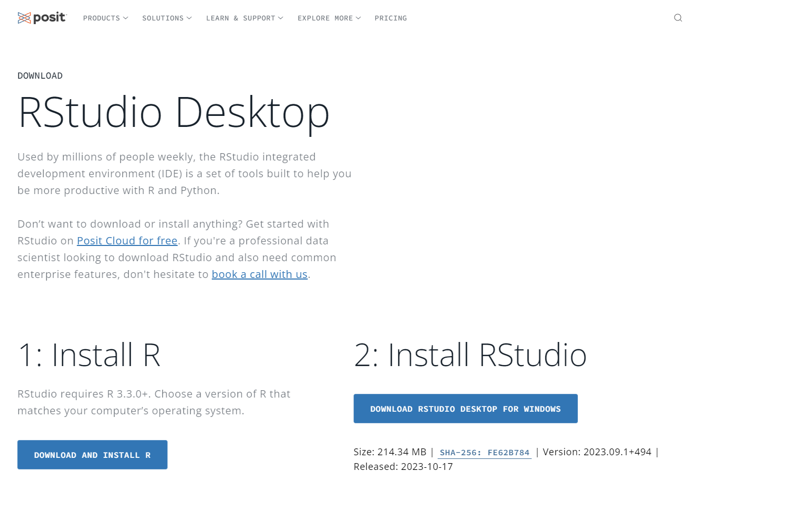

Data Science
for the Financial Analyst
Prework: Setup for the

Welcome!
About this course
The course will run for 6 weekends.
- Combines slides, live coding examples, quiz questions, and exercises for you to participate in.
- You will need to install the software used throughout the course.
- Software consists of:
- Programming Language Core: R
- Integrated Development Environment (IDE): RStudio
- R extensions: Packages (or libraries)
What is R?
R is a programming language and free software environment for data science, statistical computing, and graphics.
R was conceived in 1992 by Ross Ihaka and Robert Gentleman as an open source (that is, the original source code is made freely available) implementation of the S programming language.
Since its release in 1995, R has outgrown its original purpose and is now super versatile. It can, among other things help you to:
- run statistical analysis and data workflows
- design incredible, publication-ready visualizations
- generate automated reports
- create web applications
- Create presentation slides, books, and even entire websites!
Course Resources
Why (not) R?
Pros:
- Unparalleled data manipulation libraries based on tidy principles


- Cohesive and intuitive plotting ecosystem
- Machine learning with tidy principles
- free, open source, and platform-independent.
- wide range of dedicated packages provide extra functionality
- strong capabilities for data analysis and visualization
- huge (and open) online community
- given its focus on functions, it offers an easy transition into code (especially when coming from an Excel background)
Cons:
- performance: scalability, memory and speed
- steep learning curve (as likely any programming language)
- often experienced as strange to code (from a programmer perspective)
R vs. RStudio


- RStudio is an open-source IDE (Integrated Development Environment) for R
- Most popular IDE
- Many features + extensions to facilitate data science workflows
- Multi-lingual IDE + customizable
Installing R

- Visit this link to download both R and RStudio Desktop
- Click on the button to your left and visit the Comprehensive R Archive Network (CRAN).
- Click on the link that corresponds to your computer’s OS.
- Once downloaded, follow the instructions from the .exe file.
- You can watch this walk through if you are having any trouble with installation.
Installing RStudio
Visit the this link to download RStudio Desktop  - Click on the button to your right and an .exe file will download. Follow the instruction from the .exe file.
Installing RTools (only for Windows OS)
- Visit this link to download RTools
- Click on the link that corresponds to your R version (most probably Rtools 4.3)
- Download the .exe and install it.
RStudio Tour

- Q1 - contains: script, data, command to run script
- Q2 - contains: console
- Q3 - contains: environment
- Q4 - contains: files, plots, packages, help
RStudio Settings
Some people like Rstudio to remember stuff from session to session. We think this is dangerous. So to avoid future hassle, we recommend that you change two settings.
Locate Preferences (on Mac, this is in the RStudio menu; for Windows, go to Tools > Global Options). In the General tab, uncheck “Restore .RData…” and select “never” for “Save workspace…”